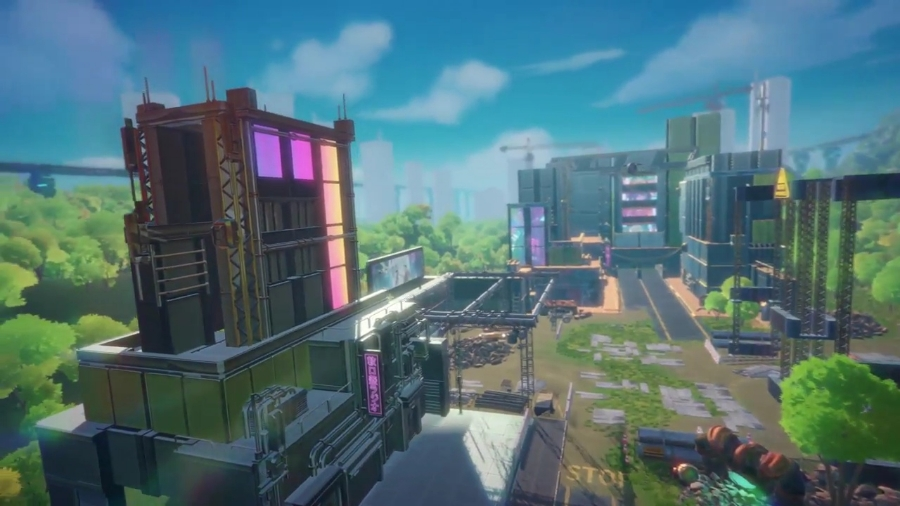
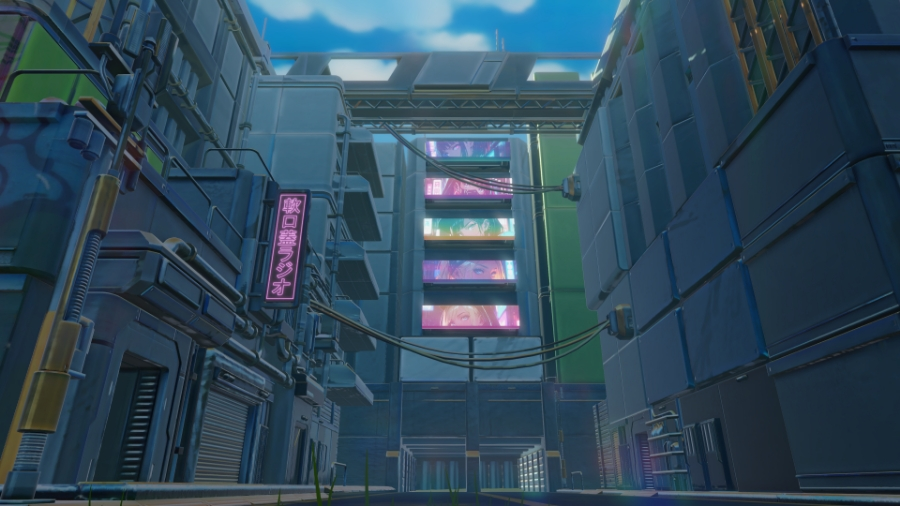
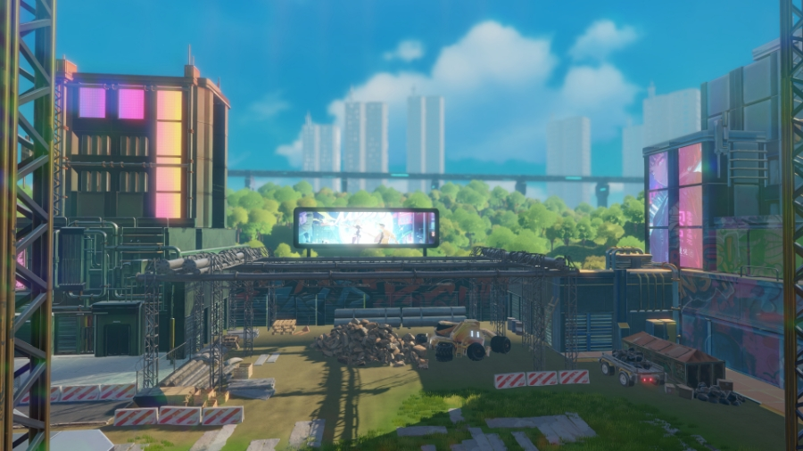

Stylized Urban Street Scene
기존 프랍을 활용한 URP 스타일 전환

프로젝트 소개
실사 계열 프랍을 손맵풍으로 리터치해 녹지, 산업 구조물, 네온이 공존하는 실시간 거리 장면을 구성했습니다.
담당 업무
- 기존 모델의 일부 수정과 정리
- 텍스처 리터치 및 씬 배치
- Unity URP 라이팅·후처리
기여 범위 및 사용 리소스
- 기존 환경 프랍 사용. 개별 모델의 패키지명과 저작자는 미확인.
- 로봇을 포함한 원천 모델 직접 제작 범위는 미확인.
기술 및 툴
Gallery
거리 구성과 룩
도로 축, 네온 간판, 녹지와 로봇 잔해로 장면의 시각 중심을 나눴습니다.





